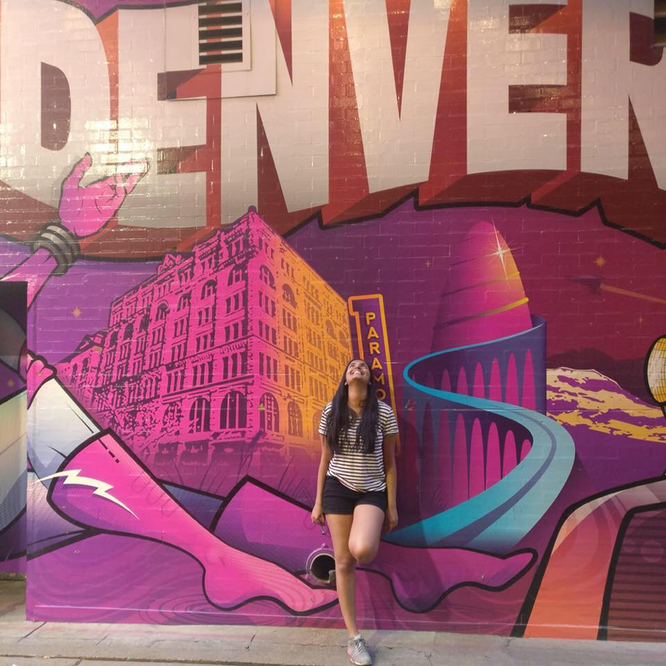

Human Interest Features Kriti Varghese International Relations Majors Seek Peace and Security through Global Learning Best Professor: Dr. Bryan Enderle (Part of Best of Davis 2018) Study Abroad Led a Biotech Major toward International Work